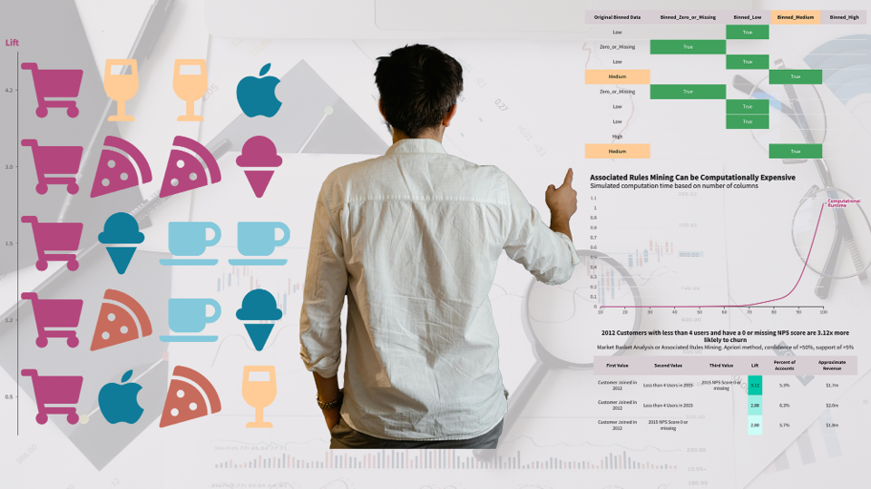
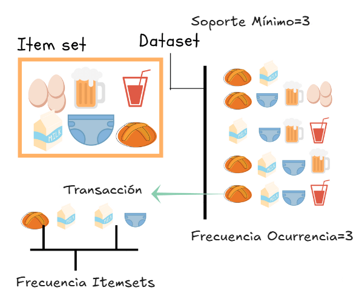
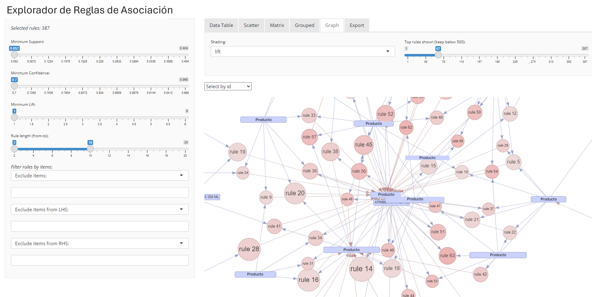
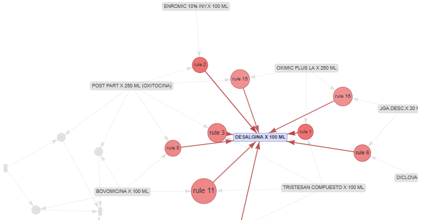

Introducción
El algoritmo Apriori es un algoritmo de aprendizaje automático no supervisado que se utiliza para el aprendizaje de reglas de asociación. Este aprendizaje es una técnica de minería de datos que identifica patrones, conexiones y dependencias frecuentes entre diferentes grupos de elementos (conjuntos de elementos o itemsets) en los datos. Algunos casos de uso comunes son las predicción de enfermedades y los sistemas de recomendación, como el análisis de la cesta de compra para la industria del retail.
El algoritmo itera los datos para identificar \(K\) conjuntos de elementos, es decir, \(K\) elementos que aparecen juntos con frecuencia. A continuación, utiliza los \(K\) conjuntos de elementos para identificar los \(K+1\) conjuntos de elementos. El algoritmo Apriori se basa en la idea de que añadir artículos a un grupo de compra frecuente solo puede reducir su frecuencia, no aumentarla. El proceso se basa en la propiedad Apriori, que establece que si un conjunto de elementos aparece con frecuencia en un conjunto de datos, todos sus subconjuntos deben ser frecuentes. Por el contrario, si un conjunto de elementos se identifica como poco frecuente, todos sus superconjuntos se consideran poco frecuentes.
El algoritmo Apriori es aplicable a todo tipo de conjuntos de datos, especialmente a los generados por bases de datos transaccionales, y se utiliza a menudo para el análisis de la cesta de compra como apoyo a los sistemas de recomendación. Por ejemplo, al utilizar una plataforma de comercio electrónico que vende ropa y zapatos, un comprador busca zapatos y decide añadir un par de zapatos negros formales a su cesta de compra. El comprador observa entonces que la interfaz recomienda otros artículos, como calcetines. Una de las maneras en que funciona este sistema de recomendación es aprender los patrones de compra de los clientes y asociar artículos que probablemente se hayan comprado juntos.

Cómo funciona el algoritmo Apriori
Cada uno de los pasos clave del algoritmo Apriori busca identificar conjuntos de elementos (itemsets) y todos sus posibles superconjuntos, buscando los más frecuentes para crear las reglas de asociación.
Paso 1: Generación de conjuntos de elementos frecuentes
El algoritmo primero identifica los elementos únicos, a veces denominados conjuntos de elementos, en el conjunto de datos junto con sus frecuencias. Luego, combina los elementos que aparecen juntos con una probabilidad superior a un umbral identificado en conjuntos de elementos candidatos y filtra los conjuntos de elementos poco frecuentes para reducir el costo computacional en los pasos posteriores. Este proceso, conocido como minería de conjuntos de elementos frecuentes, busca únicamente conjuntos de elementos con frecuencias significativas.
Paso 2: Expandir y luego “podar” conjuntos de elementos
Usando la propiedad Apriori, el algoritmo combina aún más los conjuntos de elementos frecuentes para formas conjuntos de elementos más grandes. Las combinaciones de conjuntos de elementos más grandes con menor probabilidad de “podan”. Esto reduce aún más el espacio de búsqueda y aumenta la eficiencia computacional.
Paso 3: Repetir los pasos 1 y 2
El algoritmo repite los pasos 1 y 2 hasta que se generen exhaustivamente todos los conjuntos de elementos frecuentes que cumplen con el umbral de probabilidad definido. Cada iteración genera asociaciones más complejas y completas en los conjuntos de elementos.
Una vez que Apriori ha creado los conjuntos de elementos, se puede investigar la solidez de las asociaciones y relaciones generadas.
Medición de conjuntos de elementos
El algoritmo Apriori utiliza las métricas de soporte (support), confianza (confidence) y elevación (lift) para definir sus criterios operativos y mejorar la eficiencia del rendimiento.
Soporte
El soporte se define como la relación entre el número de veces que un elemento aparece en las transacciones y el número total de transacciones. Esta métrica define la probabilidad de ocurrencia de cada elemento individual en las transacciones. La misma lógica se puede aplicar a los conjuntos de elementos.
\[S\left( I_{A} \right) = \frac{Occ(I_{A})}{TotalTransacciones}\]
Donde \(I_{A}\) es ítem A, \(Occ(I_{A})\) es el número de ocurrencias del ítem A, y \(S(I_{A})\) es el soporte del ítem A.
Por ejemplo, en una tienda minorista, 250 de 2,000 transacciones diarias podrían incluir la compra de manzanas. Usando la fórmula:
\[S\left( I_{Manzanas} \right) = \frac{250}{2000} = 0.125\]
El resultado implica que hay un 12.5% de probabilidad de que se compraran manzanas ese día.
Puede indicar un umbral de soporte mínimo requerido al aplicar el algoritmo Apriori. Esto significa que cualquier artículo o conjunto de artículos con un soporte inferior al mínimo especificado se considerará poco frecuente.
Confianza
La métrica de confiaza identifica la probabilidad de que los elementos o conjuntos de elementos se presenten juntos en los conjuntos de elementos. Por ejemplo, si hay dos elementos en una transacción, se asume que la existencia de uno conduce al otro. El primer elemento o conjunto de elementos es el Antecedente y el segundo, es el consecuente. Por lo tanto, la confianza se define como la razón entre el número de transacciones que tienen tanto el antecedente como el consecuente, y el número de transacciones que solo tienen el antecedente. Este escenario se representa como:
\[C\left( A,B \right) = \frac{Occ(A\cap B)}{Occ(A)}\]
Donde \(A\) es el antecedente, \(B\) es el consecuente y \(C(A,B)\) es la confianza de que \(A\) conduce a \(B\).
Ampliando el ejemplo anterior, supongamos que hay 150 transacciones en las que se compraron manzanas y plátanos juntos. La confianza se calcula como:
\[C\left( Manzanas,Plátanos \right) = \frac{150}{250} = 0.6\]
Este resultado indica una probabilidad del 60% de que la compra de una manzana conduzca a la compra de un plátano. De igual manera, suponiendo un total de 500 transacciones de plátanos, la confianza en que la compra de un plátano conduza a la compra de una manzana se calcula como:
\[C\left( Manzanas,Plátanos \right) = \frac{150}{500} = 0.3\]
En este caso, solo hay un 30% de probabilidad de que la compra de un plátano conduzca a la compra de una manzana.
Si bien la confianza no es una buena medida de probabilidad, no garantiza una asociación clara entre los elementos. El valor de la confianza puede ser alto por otras razones. Por ello, se aplica un umbral mínimo de confianza para descartar asociaciones poco probables durante la minería de datos con reglas de asociación.
Solución
La solución que brinda la consultoría es realizar el análsis exhaustivo de las transacciones, por ejemplo de un retail, para cierto rango de tiempo. El análisis permite identificar todos los conjuntos de elementos que ocurren con una frecuencia por encima de un determinado límite. El siguiente paso es convertir esos conjuntos de elementos frecuentes en reglas de asociación.
Los resultados se le presentarán con un informe exhaustivo del análisis, incluyendo varias gráficas y métricas. Adicionalmente, se incluye una aplicación web que le permitirá parametrizar todos las métricas de soporte, confianza, reglas de asociación, etc.
A continuación un ejemplo de una solución implementada para un cliente.


La compañía descubrió un sin número de insights, por ejemplo, los clientes estaban comprando cierto producto que viene en dos presentaciones; una de ellas pequeña y la otra grande, sin embargo, no tenía mucho sentido que estuvieran juntos en el mostrador, sin embargo, esa creencia fué desmitificada por la herramienta. Para los clientes sí tenía mucho sentido comprar la presentación pequeña y la grande, esto fue muy evidente al mostrarse las reglas de asociación de la canasta de compras del cliente. Este fue una de los hallazgos bastante interesantes de la herramienta.
Casos de uso
Descubrir y agrupar conjuntos de elementos tiene múltiples aplicaciones, y el algoritmo Apriori se considera a veces la primera opción que los mineros de datos prueban debido a su versatilidad. Veamos algunos casos de uso comunes en diferentes industrias.
Análisis de la cesta de compra
Una de las principales aplicaciones más comunes del algoritmo Apriori es el análisis de la cesta de compra. Los minoristas analizan el historial de compras de los clientes y optimizan la distribución de las tiendas colocando los artículos de compra frecuente cerca unos de otros o en el mismo estante. Las plataformas de comercio electrónico utilizan el algoritmo Apriori para estudiar las relaciones entre productos según las preferencias del usuario y el análisis de patrones de compra para crear sistemas eficientes de recomendación de clientes. Este mismo tipo de análisis puede utilizarse para optimizar la compra de servicios, por ejemplo, al elegir cursos de formación de un catálogo o recomendar otros tipos de cobertura al seleccionar un seguro.
Sector salud
El algoritmo Apriori puede utilizarse para encontrar reglas de asociación sólidas entre síntomas y enfermedades, mejorando así la eficiencia del diagnóstico y diseñando planes de tratamiento específicos. Por ejemplo, qué pacientes son prepensos a desarrollar diabetes, o el papel que la dieta o el estilo de vida desempeñan en la enfermedad. También puede ayudar a identificar factores asociados con reacciones adversas a medicamentos.
Web analytics
Los algoritmos Apriori también son aplicables en base de datos no transaccionales. Los analistas de datos suelen utilizan Apriori para la minería de datos de uso web, el análisis de datos de clics y la interpretación del comportamiento del usuario.
Finanzas
Otra aplicación común del algoritmo Apriori es la identificación de patrones fraudulentos en transacciones financieras. Identificar patrones de compra específicos como posiblemente fraudulentos permite a una institución financiera actuar con rapidez para suspender transacciones o contactar al titular de una cuenta.
Y usted, tiene sus propios planes para implementar el algoritmo Apriori?. Póngase en contacto con mi persona para recibir más información de esta solución.